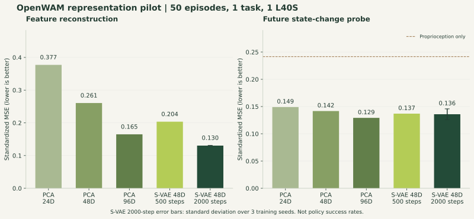
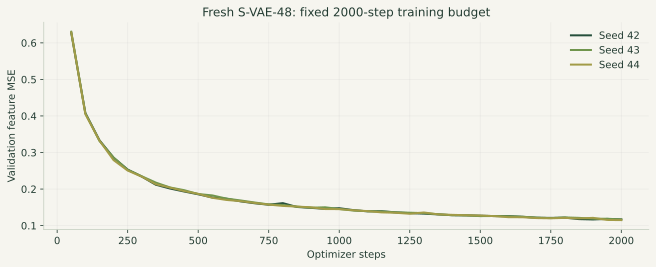

重建误差减半，
预测收益仍需验证。
在一个 RoboTwin 仿真任务上，使用发布的 DINOv3 编码器，完成 PCA 对照、S-VAE 短训练，以及三个训练种子的固定预算复测。
S-VAE-48 的特征重建 MSE 比 PCA-48 低约 50%；当前观测 → 短时状态变化的预测 MSE 仅低约 4%。
预测差距小于三个训练种子的标准差。本轮支持继续研究“压缩保留了什么信息”，尚不足以确认稳定的控制收益。
02结果：特征重建与预测分开看
下表的 probe 输入为当前帧视觉表征 + 当前 proprioception，目标为四个原始时间步之后的末端位移与夹爪状态。MSE 越低越好。± 是三个 S-VAE 训练种子的样本标准差，其他条件来自固定划分的确定性拟合或一个训练 seed。
| 条件 | 通道 | 特征重建 MSE ↓ | 状态变化 probe MSE ↓ | 平移 RMSE / mm ↓ | 夹爪 RMSE ↓ |
|---|---|---|---|---|---|
| Raw DINOv3 | 768 | 0.0000 | 0.1207 | 6.41 | 0.114 |
| PCA-24 | 24 | 0.3773 | 0.1490 | 7.59 | 0.048 |
| PCA-48 | 48 | 0.2606 | 0.1418 | 7.34 | 0.055 |
| PCA-96 | 96 | 0.1649 | 0.1292 | 6.72 | 0.104 |
| S-VAE-48 / 500 steps | 48 | 0.2035 | 0.1370 | 7.16 | 0.076 |
| S-VAE-48 / 2000 steps | 48 | 0.1304 ± 0.0005 | 0.1359 ± 0.0098 | 7.05 | 0.074 |
Raw DINO 的重建误差为 0 是恒等映射定义，不代表与压缩条件同等成本。平移与夹爪指标分开提供，避免综合 MSE 掩盖任务间的取舍。

作为参考，仅使用 proprioception 的 probe MSE 为 0.2416；“保持当前夹爪、预测零位移”的简单基线为 0.6115。视觉特征在这个任务中带来了额外预测信息，但本实验不能将这种收益等同于策略收益。
相同预算下，训练随机性仍影响下游诊断
| 训练 seed | 验证集选中的 step | 重建 MSE | Probe MSE | 按测试 episode bootstrap 的 95% 区间 |
|---|---|---|---|---|
| 42 | 1900 | 0.1307 | 0.1271 | [0.099, 0.165] |
| 43 | 2000 | 0.1307 | 0.1341 | [0.099, 0.178] |
| 44 | 2000 | 0.1298 | 0.1465 | [0.105, 0.194] |
PCA-48 的 probe episode-bootstrap 区间为 [0.111, 0.177]。区间描述固定训练条件下的评测不确定性；训练 seed 标准差是另一种变化来源。这里没有进行足以支持优势结论的显著性检验。


03实际运行的协议
- 数据。RoboTwin2.0 的 adjust_bottle、aloha-agilex_clean_50。压缩包 SHA-256 与官方 HF LFS 元数据一致。按 episode 固定 35/5/10 划分，seed 42；每条轨迹取 12 个完整的 33 步窗口，共 420/60/120 个 train/val/test clips。
- 编码。使用 OpenWAM 发布的 DINOv3 Study 编码器权重，严格匹配全部 encoder 参数；采用未修改的上游 DINOv3VideoEncoder 与三视角拼图实现，384×320，video stride 4，输入 9 帧，得到 768×3×24×20 的潜特征。
- 压缩。PCA-24/48/96 及新训 S-VAE-48 只拟合训练轨迹。S-VAE 使用上游结构和 MSE + cosine + KL 损失、batch 2 clips、AdamW、峰值 LR 1e-4。500 步 pilot 后，补 seed 42/43/44 各 2,000 步。
- Probe。只读当前 condition latent，经逐 token LayerNorm、2×2 空间池化，再与当前 proprioception 拼接，使用线性 ridge。输入与目标缩放在 train 拟合，正则化参数仅由 validation 选择。目标是未来已实现的状态变化，未训练控制器。
- 检查。确认数据划分无共享 episode、输出 shape 与上游一致、所有指标有限；打乱未来帧时当前 condition latent 最大差值为 0。测试指标按 episode 聚合重采样，未把重叠窗口当独立样本。
来源与实现版本
OpenWAM 代码：7c5861e。环境：PyTorch 2.7.0+cu126、Transformers 5.17.0。该环境用于独立 encoder / reducer 实验，完整策略与仿真依赖尚未在此环境安装。
权重：发布的 DINOv3 + S-VAE Study 检查点，revision af1595c8ee54955116abbc0b0ffa17fa48deb691。从中提取 293 个 encoder / reducer 张量，约 238MB，避免下载完整约 23.64GB 策略权重。
数据：RoboTwin2.0 adjust_bottle 文件，revision 981c92aa34d8f94d4cff47e0d5bc2f7d4e0af042；压缩包 SHA-256 5554b6b30e37c6ed2f0bbc48079e8ad79d9512e9d4f910a5e71b0d5ad8fbe50e。
04用实测结果安排已有计算资源
| 工作 | 实测 / 决策 |
|---|---|
| 600 clips 特征提取 | 约 36.1 秒，包含读取、编码、缓存保存；纯 encoder 中位数约 8.1 ms / 9-frame clip。 |
| 特征缓存 | 1.33GB；所有压缩与 seed 实验共享同一份缓存。 |
| 显存 | S-VAE 训练峰值 PyTorch allocated 约 1.03GB；运行中驱动级占用观测约 1.7GB，含 CUDA 上下文等开销。 |
| 已记录阶段总耗时 | 约 5.3 分钟，单卡折算约 0.089 GPU-hours；包含阶段内 CPU 分析，不含安装、下载和启动开销。 |
| 存储布局 | 环境、权重、轨迹与缓存放在有余量的数据卷；同一存储组复用，避免复制到空间紧张的 home。 |
| 后续 GPU 分工 | 单卡提取 / 诊断；多张空闲卡用于独立任务或 seed 并行。完整 WAM 训练另设显存与吞吐测试。 |
05结论边界与复现发现
- 只有一个干净仿真任务、一个 episode 划分。600 个窗口包含时间相关性，不能当作 600 次独立机器人实验。
- 三个 seed 的复测是在看到 500 步 pilot 后提出的，且复用了同一测试划分，因此整轮定位为探索实验。确认性结论需要新的任务 / 留出数据。
- 新训 S-VAE 的 2,000 步预算不代表收敛，与官方模型的训练量也不相等。没有进行完整 WAM 训练或机器人闭环评测。
- 官方 S-VAE 可能见过这些轨迹，因此只记录为上下文参考。它的重建 MSE 为 0.1237、probe MSE 为 0.1463，未纳入主表公平排名。
已核实的配置差异：发布的 V-JEPA 检查点 manifest 与 S-VAE sidecar 均为 1408 输入维；论文正文示例写 1024 维。下一步复现使用实际 manifest，并向维护者确认文字或变体差异，暂不把它判作实现 bug。
06根据结果调整下一轮
- 扩大任务覆盖。预先锁定抓取、精细放置、双臂交接三个不同任务；加入 randomized 场景，并明确分开 ID / OOD 协议。每个新实验都保留共同基线。
- 增加诊断的控制相关性。分解移动阶段、夹爪转换阶段和静止阶段；检查误差是否集中在关键操作时刻。只有现象指向时间信息丢失时，才增加时间聚合器。
- 再接完整策略。先运行发布的 Wan-VAE 与 DINO+S-VAE 策略 smoke，核对动作空间、归一化和仿真配置；新 reducer 的完整 WAM 训练在资源校准后决定。
- 形成贡献。先整理 episode manifest、train-only PCA、held-out diagnostics 与结果模板的独立 PR；把本轮作为可复现的例子，不承诺未经验证的性能提升。
当前所有实验均已结束。下一轮建议不是后台运行中的任务。